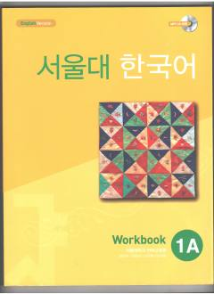

SNSeul Milliy Universitetining koreys tili bo'yicha 1A darajali ishchi daftari.
Ushbu kitob Seul Milliy Universitetining Koreys tili instituti tomonidan tayyorlangan 1A darajali ishchi daftardir. U koreys tilini o'rganuvchilar uchun grammatika va leksikani mustahkamlashga qaratilgan turli mashqlarni o'z ichiga oladi.